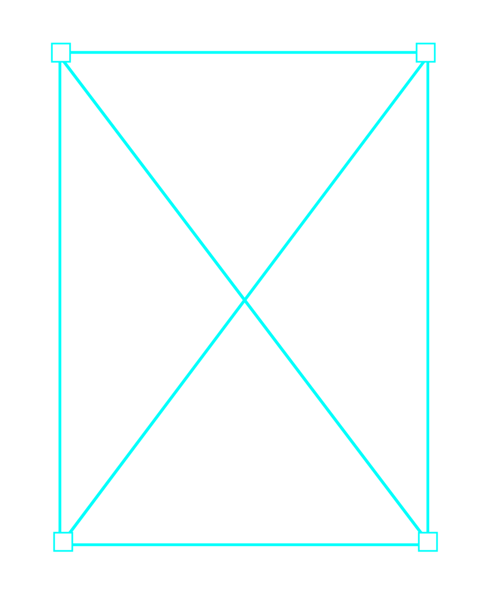
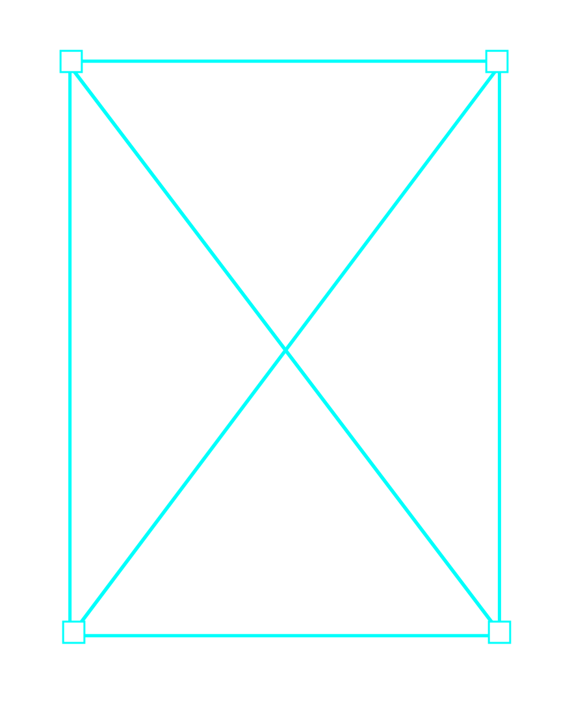

2024
[typographic poster]
297 * 420
산울림의 ‘아니 벌써’ 노래 가사 중 일부를 활용하여 레터링 후
이를 바탕으로 그래픽 포스터를 제작했습니다.
가사 중 ‘아니 벌써 해가 솟았나’는 디자인 작업에 몰두하다 보면
어느새 해가 떠 있는 순간과 닮아 있다고 느꼈고, 이를 바탕으로
노트북 작업 화면을 연상시키는 형태로 포스터를 구상하고 디자인했습니다.
‘아니 벌써 해가 솟았나!’
 

♩listen to the song(ᵕ ᵕ)♩
rising sun graphic¸¸♪
work process(˘ᗜ˘)